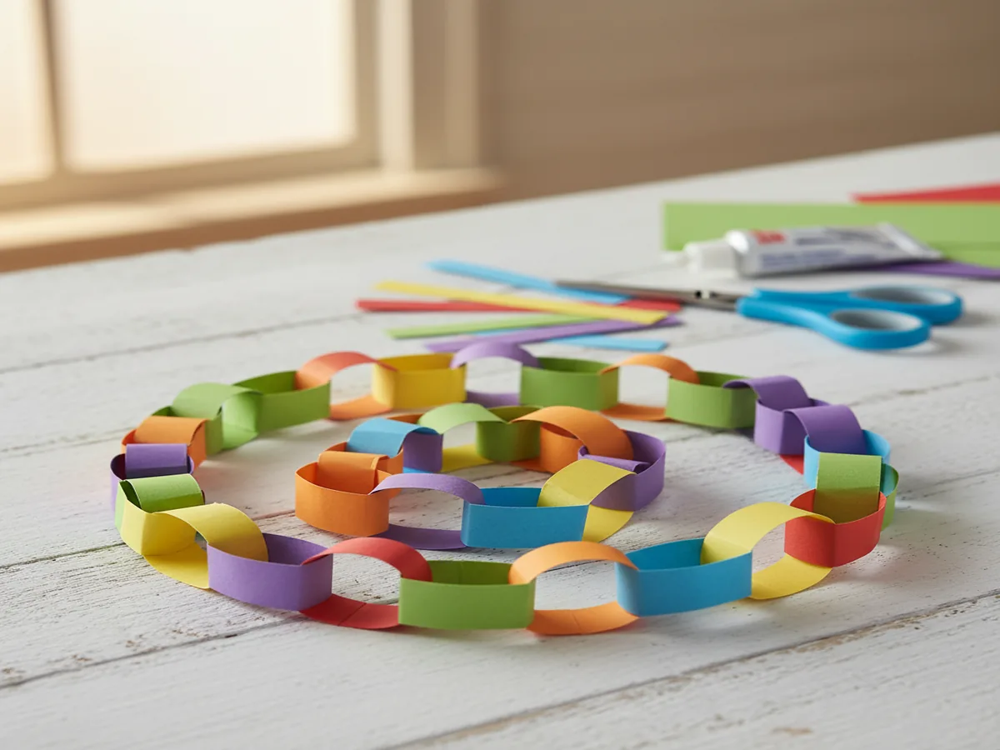
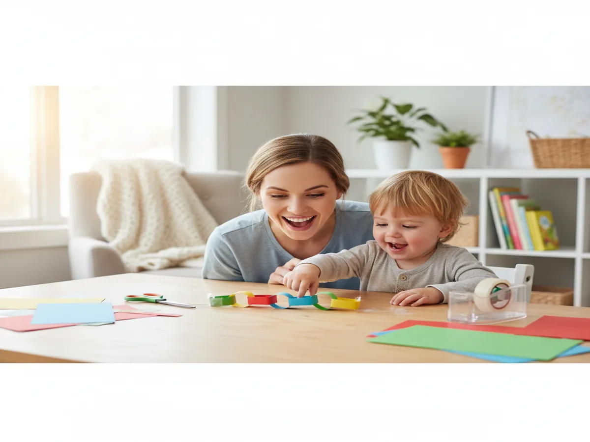
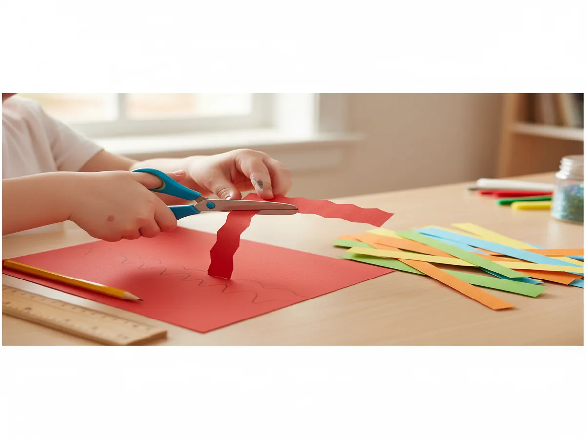
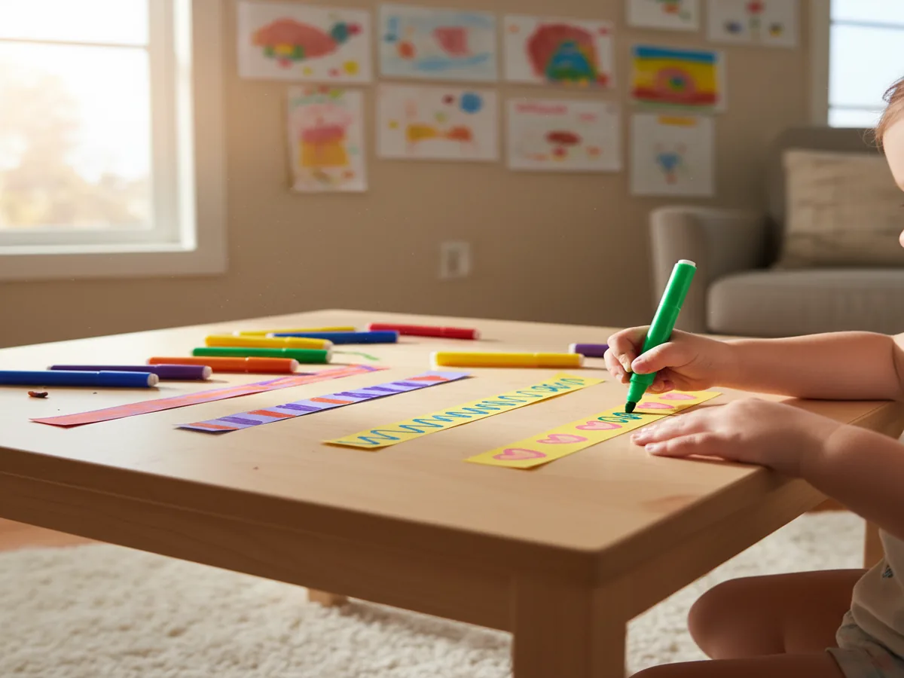
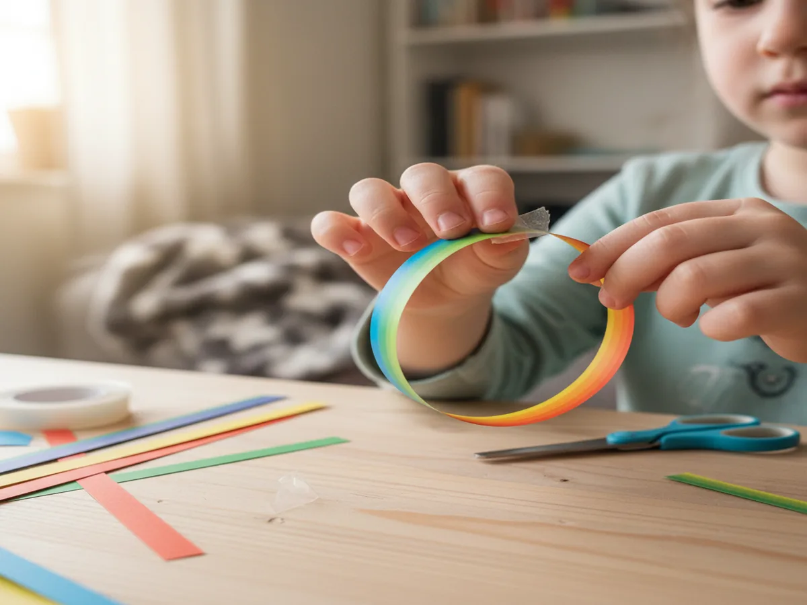
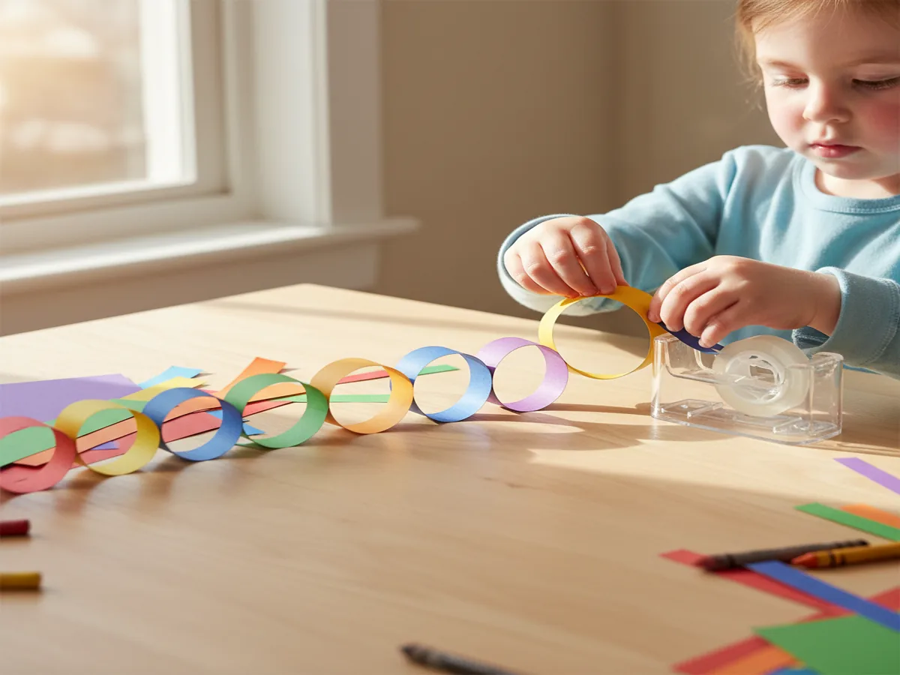
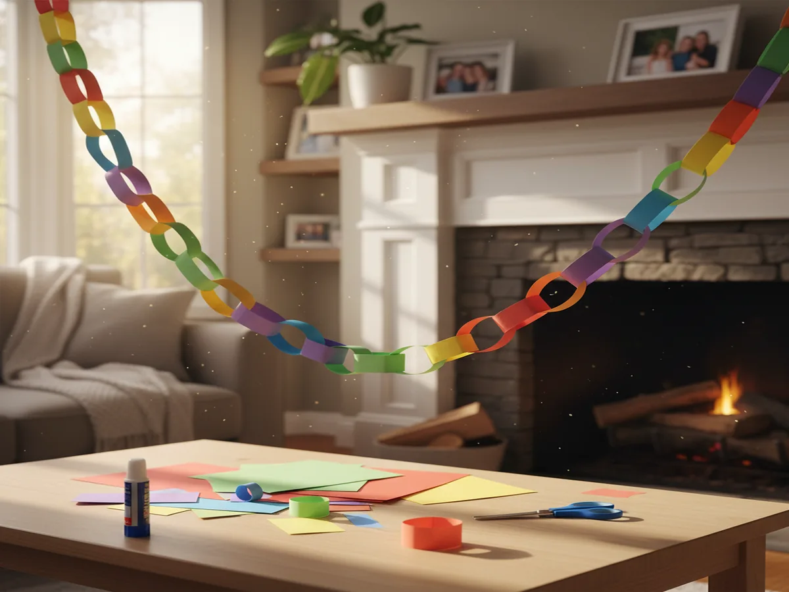

There is something wonderfully satisfying about a paper chain craft that never gets old, no matter how many times you make one together. It is one of those projects that looks impressive hanging across a doorway but takes almost no time to put together, and even toddlers can join in with just a little help. Grab a stack of colorful construction paper and let's get started!
Why Kids Love This Craft
Paper chains have a special kind of magic because kids can see the progress happening right before their eyes. Every loop they add makes the chain visibly longer, and that sense of building something bigger and bigger is genuinely thrilling for little ones. By the time they reach 10 or 15 links, they are completely hooked and begging to keep going.
This craft is also a wonderful confidence booster. The steps are simple enough that a three-year-old can master them with minimal help, yet the finished result looks like something you would hang at a real party. No artistic talent needed at all, just a little patience and a love of color. Kids who sometimes feel frustrated by more complex crafts absolutely shine with paper loop garlands because there is no wrong way to make one.
Beyond the fun, paper chains quietly build fine motor skills as little fingers fold, hold, and tear strips into shape. Threading each new loop through the previous one takes real hand-eye coordination, and kids practice it over and over without even noticing. By the time the chain is done, they have had a full workout for those tiny hand muscles.

What You'll Need
- Construction paper in assorted colors (one standard 9x12 pack covers a very long chain)
- Child-safe scissors (rounded-tip scissors work great for ages 3 and up)
- Clear tape (a tape dispenser makes it much easier for small hands)
- Ruler (for measuring strips, though imperfect sizes are totally fine)
- Washable markers or crayons (for decorating the strips before assembling)
- Pencil (optional, for drawing cutting lines on the paper)
Step-by-Step Instructions
Step 1: Cut Your Paper Strips
Start by cutting your construction paper into strips about 1 inch wide and 8 inches long. You can use a ruler and pencil to draw guidelines first, or just eyeball it for a charmingly imperfect look. Older kids can cut the strips themselves while younger ones watch and help choose the colors. Aim for at least 20 strips to get a satisfying length, and feel free to mix and match every color in the pack.

Step 2: Decorate the Strips
Before assembling, let your child go wild decorating each strip with markers, crayons, stickers, or stamps. This is the most open-ended part of the whole project, so step back and let their creativity take over. Kids love writing their names, drawing tiny hearts, or creating zigzag patterns across each strip. A decorated paper strip chain looks so much more personal and magical than a plain one.

Step 3: Form the First Link
Take one strip, curl it into a circle so the two ends overlap slightly, and press a small piece of tape over the overlap to hold the loop closed. That is your first link! Hold it up and show your child what a single loop looks like. This is the shape that every single link in the chain will repeat, so make sure your little one gets a feel for how it works before moving on to the threading step.

Step 4: Build the Chain
Slide a new strip through your first loop, then curl it into a circle the same way and tape the ends closed. You now have two linked loops! Keep going, threading each new strip through the last loop before closing it. Watch the chain grow longer with every link your child adds. This is the meditative, deeply satisfying part that keeps kids going for much longer than you might expect.

Step 5: Hang and Display
Once your chain is as long as you like, hang it up! Drape it across a doorway, string it along a mantel, loop it around a bedroom window, or use it as a birthday party garland. Tape or a piece of string tied to each end works perfectly for hanging. Stand back and admire the colorful arc your child just created from nothing but paper and imagination. The pride on their face will make every snipped strip worth it.

Variations to Try
Advent Calendar Countdown Chain
Make a chain with exactly 25 links in December and let your child tear off one link each morning counting down to Christmas. Write a small festive activity on each strip before assembling, like "drink hot cocoa" or "read a Christmas book," to make the daily tear-off even more exciting. Use red and green paper for a classic holiday look, or mix in gold and silver for some extra sparkle.
Rainbow Gradient Chain
Arrange your strips in rainbow order before you start assembling: red, orange, yellow, green, blue, indigo, violet, then repeat. The finished chain will flow through every color of the rainbow in a gorgeous gradient that looks like it belongs in a craft store. This version works beautifully as a spring decoration or a cheerful bedroom garland any time of year.
Jumbo Toddler Chain
For toddlers who find standard strips a little fiddly, cut wider strips about 2 to 3 inches wide from larger sheets of paper. The bigger loops are much easier for tiny fingers to thread and tape, so even 2-year-olds can build their own chain almost independently. A jumbo chain also makes a wonderfully bold party decoration that looks stunning in photos.
Your child just made something colorful and beautiful with their own two hands, and that is worth celebrating. Hang it somewhere they can see it every day and watch their face light up knowing they built every single link themselves.